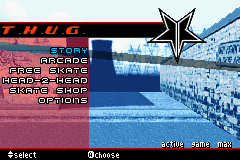

Tony Hawk's Underground

Not-complete on 2018-7-27
3 / 5
Release Date: Oct 27, 2003
Meta Score: 86
Screenshots

Notes
Yes, I was on a bad streak. But it gets better after this. Can be summarised as very similar to THPS4 which I played previously. Suffers from the same problems. Adds only a few new mechanics like the ability to get off your board. Seemingly lengthy career mode where you build up a custom skater from nothing. Fundamentally not a very good version of THPS/THUG compared to the home console versions, so I moved on.